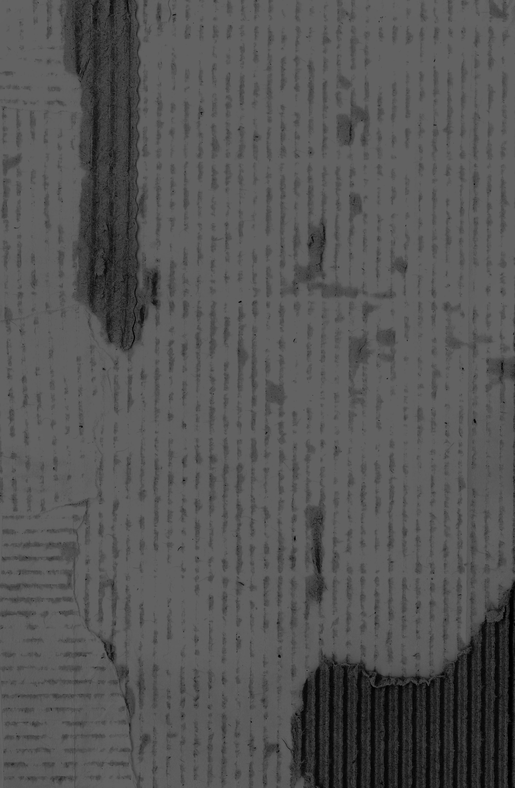

“C’è un posto dove la posso lavare?”

Naples 2
Location:
Materials:
Pizza box
Journal entry
Shopkeepers are usually pretty surprised when I speak to them in Italian, especially if I’m silent at first. For example, I bought an apple from a fruit stand close-ish to the train station and since it was loud my voice was a bit drowned out when I said I’d like the apple in Italian. The girl manning the stand conducted the rest of the interaction in silence, assuming, I could tell, that I wouldn’t be able to understand. Most shopkeepers around here do that – they point to euro totals on receipts and screens instead of saying them aloud, they use English words, etc. This particular girl was doing lots of pointing. She looked genuinely surprised when I then came out with “C’è un posto dove la posso lavare?” “Is there a place I can wash this?” She responded to me in Italian. That was a good moment.